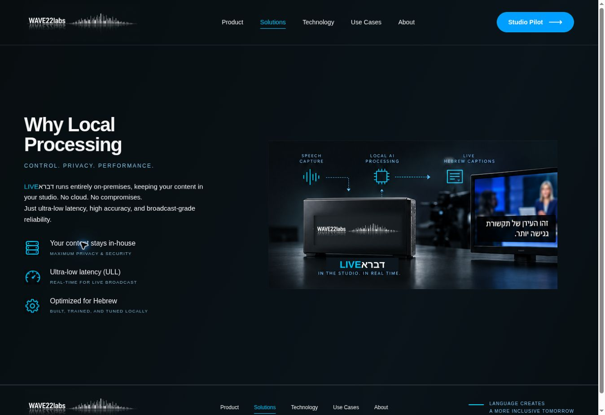
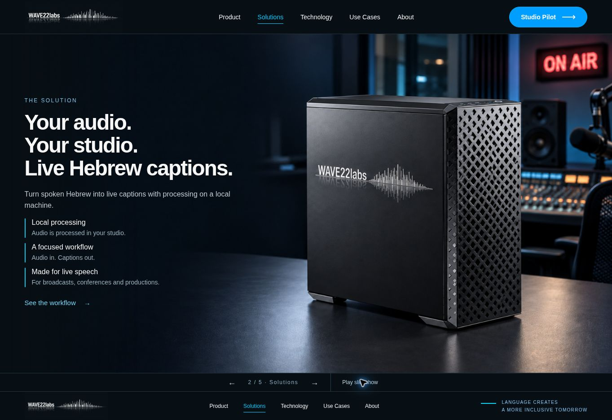
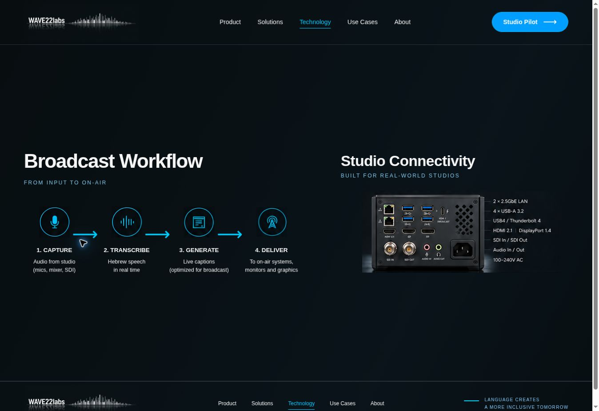
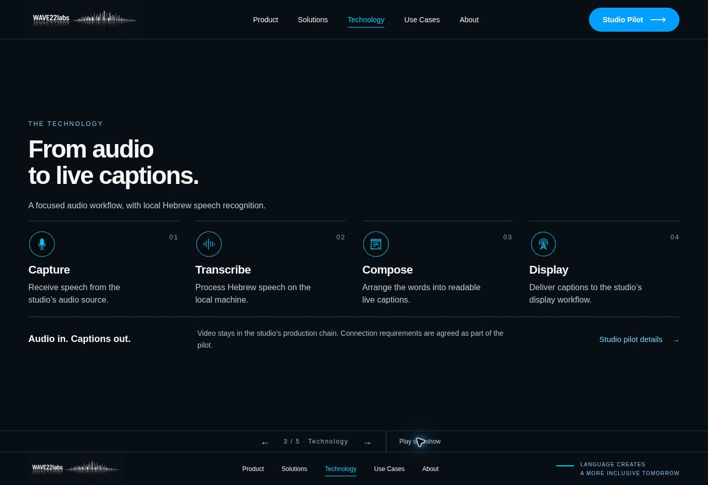
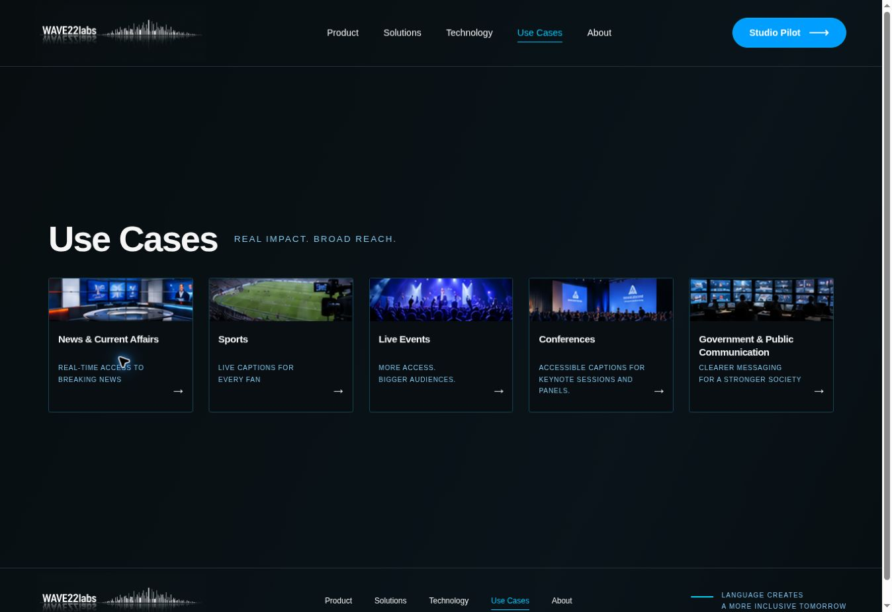
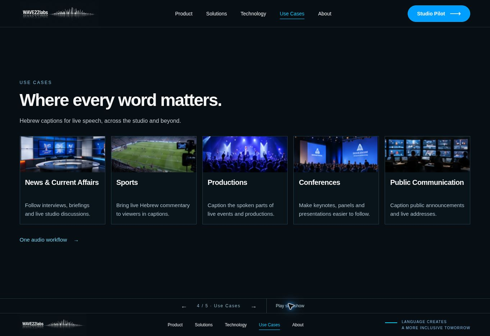
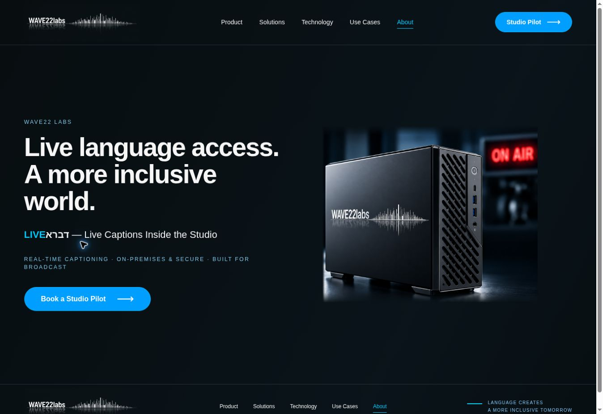
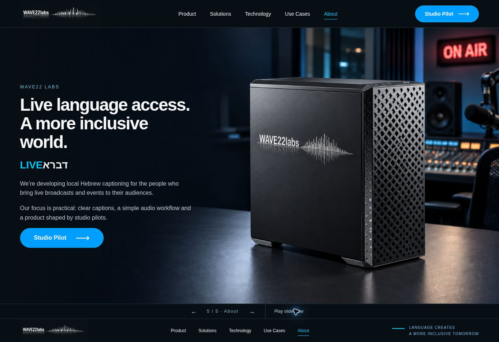
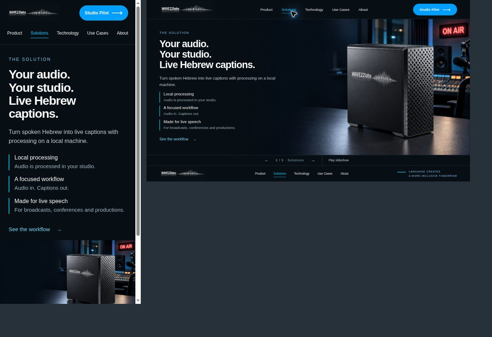

23 בספטמבר 2026. נבדקו ארבעת הדפים הנוספים, המעברים והפריסה במובייל. אלה צילומי המסך מאותה בדיקה, לפני התיקון ואחריו.
התמונה הישנה והבטחות ביצועים בלתי מבוססות הוחלפו בתמונת המוצר המאושרת ובהסבר תמציתי על עיבוד מקומי.


הוסר מפרט החיבורים שלא אושר, לרבות SDI. הדף מציג ארבעה שלבים: קליטת אודיו, תמלול, סידור כתוביות והצגה.


הכרטיסים קיבלו טקסט קריא ותיאור מעשי. נוספו פריסות לטלפון ולמחשב.


תמונת המכשיר הוחלפה בעיצוב המאושר. המסר מתאר את המוצר בפיתוח, בלי להמציא לקוחות או הישגים.


בחמשת הדפים לא נמצאה גלילה אופקית ברוחב תוכן 375 פיקסלים. במסך לפטופ 1280×720 כל חמשת הדפים נכנסים בגובה המסך. במובייל נשמרת גלילה אנכית כדי לא לפגוע בקריאות.

הבדיקה אינה אישור נגישות מלא. הגדרת הפחתת תנועה עוצרת את ההנפשות ומבטלת הפעלה אוטומטית ראשונית. אין עדיין מערכת לקבלת פניות לפיילוט. תצורת החיבורים והתמונה האחורית דורשות אישור מפרט לפני פרסום.